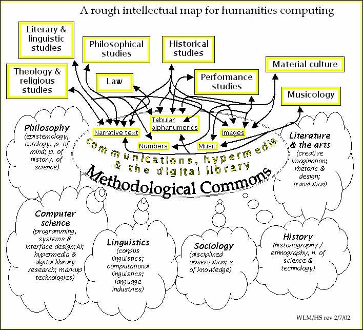
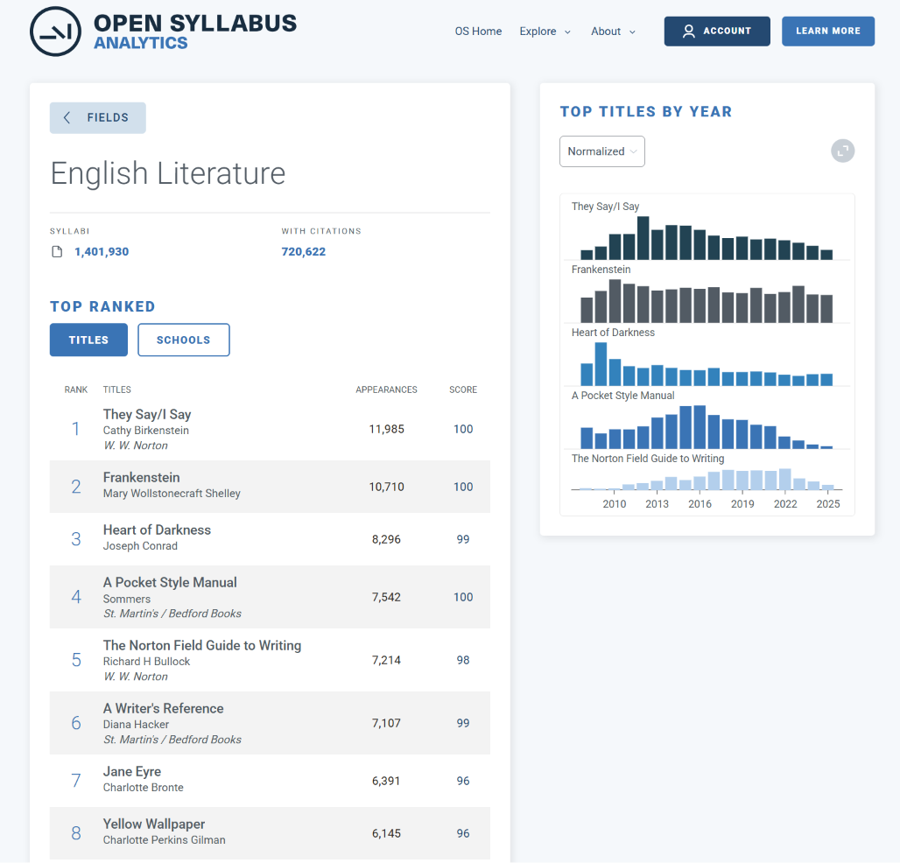

Session E6 · Corpus Linguistics and Digital Translation
Speaker: Haruka TSUTSUI (NIHU)
DH was conceived as a methodological commons linking multiple disciplines.
Here we examine how that vision has played out within English literary studies.

Willard McCarty & Harold Short (2002)
"An intellectual and disciplinary map of humanities computing"
via HUMANIST / Alliance of Digital Humanities Organizations
Major literary & critical journals
| Journal | Results |
|---|---|
| PMLA | 100/1203 = 8.3% |
| ELH | 42/424 = 9.9% |
| Novel | 47/413 = 11.4% |
| Critical Inquiry | 27/945 = 2.9% |
| Modernism/modernity | 36/723 = 5.0% |
| Journal of Modern Literature | 9/618 = 1.5% |
Period / author specialist journals
| Journal | Results |
|---|---|
| Shakespeare Quarterly | 5/427 = 1.2% |
| Victorian Studies | 62/1707 = 3.6% |
| James Joyce Quarterly | 19/531 = 3.6% |
| ELT 1880–1920 | 0/50 = 0.0% |
Comparanda
| Journal | Results |
|---|---|
| Cultural Analytics | 143/211 = 67.8% |
| DSH | 430/954 = 45.1% |
| AHR | 56/8125 = 0.7% |
※ OpenAlex API search of each journal 2016–2025. Keywords: digital humanities / distant reading / computational literary / text mining / stylometry / topic model. Results deduplicated by OpenAlex work ID. These are upper-bound figures, not counts of DH practice articles.
| Year | digital humanities |
computational | distant reading |
Note |
|---|---|---|---|---|
| 2016 | 9 | 1 | 5 | Vol.131 No.2 special issue |
| 2017 | 2 | 1 | 9 | — |
| 2018 | 3 | 2 | 2 | — |
| 2019 | 1 | 0 | 1 | — |
| 2020 | 10 | 4 | 4 | Vol.135 No.1 special issue |
| 2021 | 4 | 0 | 0 | — |
| 2022–2025 | 4–12 | 0–1 | 3–7 | — |
※ Red = special-issue spike.
2016: 7/9 hits concentrated in "Ecological Digital Humanities" special issue (Vol.131 No.2).
2020: 8/9 hits concentrated in "DH, Diversity & Race" special issue (Vol.135 No.1).
| Category | Count |
|---|---|
| DH used as a research method | 3 |
| Meta-discussion of DH as profession / institution | 12 |
| Mere mention, review, or response | 5 |
| Nature of citation | Count (est.) |
|---|---|
| Used as method for distant reading | ≈ 1 |
| Cited as world/comparative literature theorist | ≈ 9 |
| Other | ≈ 2 |
| Article | Detected term | Year |
|---|---|---|
| Bode 2023 | computational | 2023 |
| Franta & Silver 2024 | computational | 2024 |
| Geoghegan 2025 | computational | 2025 |
| Lee 2025 | machine learning | 2025 |
| Liu 2025 | digital humanities | 2025 |
| Parisi 2022 | computational | 2022 |
| Parker 2025 | computational, machine learning | 2025 |
Only 7 of 254 articles (2.8%) showed DH signals.
5 of 7 concentrated in 2022 or later.
Method: PDF text extraction → footnote isolation → regex \b word-boundary match.
Extraction success: 248/254 PDFs (median 38 footnotes/PDF).
| Year | Article | Nature |
|---|---|---|
| 2019 | The Computational Case against CLS (Da 2019) | Critique of DH |
| 2019 | Computational Literary Studies: Participant Forum Responses | Critical forum |
| 2021 | Data as Symbolic Form: W.E.B. Du Bois | Critical concept essay |
| 2021 | Artificial Antisemitism: Critical Theory and Datafication | Critical concept essay |
It is telling that DH first appeared prominently in CI via a critique (Da 2019).
※ OpenAlex snapshot may be incomplete for 2023–2024.
CI citations of 8 DH methodology books (2010–2025): 0 in all cases.
The question of authorship attribution predates the computer by a very long time.
Close Reading
Distant Reading
Fish (2012) → Da (2019) → Spivak (2003 → DH application)
Three different directions of critique.
Fish's position: intentionalist hermeneutics
Fish's example: Milton's Paradise Lost
Methodological critique
Multi-party debate on the Critical Inquiry official blog (March 2019–)
| Respondent | Position | Key argument |
|---|---|---|
| Algee-Hewitt | pro-DH | Da judges all of CLS by the standards of CDA (confirmatory data analysis), but what matters in literary research is EDA (exploratory data analysis)—finding patterns in data without prior hypotheses. Statistics do not replace reading; they lead to new readings. |
| Underwood | pro-DH | Topic models produce different results each run, but that is a premise of the method, not a flaw. Da misreads an exploratory tool as a hypothesis-testing instrument. |
| Long & So | pro-DH | Da's critique removes one feature from a model that works through multiple combined features—an unfair move. Applying a haiku classifier to classical Chinese poetry also ignores historical context. |
| Fish | supports Da | Formal features such as sentence length and word frequency are meaningless without intention, context, and literary history. Data mining without these produces either obvious statements or arbitrary conclusions. |
| Klein | structural critique | The structural flaw that invisible labor—data construction, metadata curation, mentoring—disproportionately falls on women and people of color also exists in DH. Practices like the Colored Conventions Project deserve proper recognition. |
| Bode | definitional critique | Da's definition of CLS is limited to ML-based word-pattern analysis, excluding at the outset important digital literary research in data construction, curation, and metadata analysis. |
Before the Da debate, Liu (2012) asked "Where is cultural criticism in DH?"
and problematized the gap between DH practice and critical theory.
In the Da debate, Bode, Klein, and others took up that question, arguing for expanding CLS to include bibliography, circulation, data construction, and curation.
Walsh (2023) opened it further toward reader reception and platform data.
Katherine Bode (2017)
Key arguments
Bode, Katherine. "The Equivalence of 'Close' and 'Distant' Reading; or, Toward a New Object for Data-Rich Literary History." Modern Language Quarterly, vol. 78, no. 1, 2017, pp. 77–106.
Lauren F. Klein (2019/2020)
Key arguments
Klein, Lauren F. "Dimensions of Scale: Invisible Labor, Editorial Work, and the Future of Quantitative Literary Studies." PMLA, vol. 135, no. 1, 2020, pp. 23–39.
Traditional CLS
Reception Studies
Using Critical Inquiry as a case study,
we examine the evidentiary structure of literary research through footnotes and in-text quotations.
Extraction & classification conditions
| Corpus | Critical Inquiry 2019–2025 |
|---|---|
| PDFs | 254 |
| Unit | Footnotes |
| Extracted | 8,940 lines |
| Classification | Claude Haiku |
Classification results
| Evidence type | Count / share |
|---|---|
| Critics, theorists, scholars | 5,694 76.9% |
| Primary sources (philosophy, politics, etc.) | 714 9.6% |
| Literary / artistic text | 669 9.0% |
| Circulation, institutional, quantitative data | 324 4.4% |
※ Percentages exclude ibid., copyright notices, PDF noise, etc. Footnotes show heavy reliance on secondary scholarly literature.
Extraction & classification conditions
| Corpus | Critical Inquiry 2019–2025 |
|---|---|
| PDFs | 248 |
| Unit | In-text direct quotations |
| Conditions | Quotation marks ≥ 8 words |
| Extracted | 1,385 |
| Analyzed | 1,209 |
Classification results
| Source type | Count / word-share |
|---|---|
| Critics, theorists, scholars | 799 / 66.1% word share 70.3% |
| Literary / artistic text | 292 / 24.2% word share 19.7% |
| Primary sources (philosophy, politics, etc.) | 84 / 6.9% word share 7.2% |
| Author/artist statements outside works | 34 / 2.8% word share 2.8% |
※ Noise (unclassifiable, author bios, footnote bleed-through) excluded. In-text quotations show a higher share from literary texts than footnotes do.
Not to replace critical intuition,
but to check its premises through frequency, distribution, comparison, and authorship attribution.
Rethinking CLS beyond the vocabulary-pattern analysis of primary texts to encompass data construction, curation, reception, and circulation.
Building on this lineage, the present research takes as its starting point the actual evidentiary structure of English literary criticism—that roughly 70% of critical texts are devoted to the words of other critics—and constructs a topography describing multiple routes of literary evaluation.
| Scholarly attention | How prominently does a work appear in research articles? |
| Cultural circulation | How widely does a work circulate through editions and library holdings? |
| Reader reception | How visible is a work in the form of general-reader rating and review counts? |
The goal is not to produce a single canonical ranking but to describe the overlaps and gaps across evaluation circuits.
Three independent evaluation circuits
Target: English-language fiction 1880–1950 34,789 works
Extracted from the Open Library dump (55,615,769 records)
| DB | Indicator | Axis |
|---|---|---|
| JSTOR | Article mention count | Scholarly attention |
| OpenAlex | Broad academic visibility | Scholarly attention |
| Open Library | Edition count | Cultural circulation |
| HathiTrust | Digitization indicator | Cultural circulation |
| Goodreads | Reader rating count | Reader reception |
| Wikidata | Sitelink count & work/author attributes | International visibility |
Matching pipeline
Extraction conditions
edition_count examples
| Work | OL editions | Profile |
|---|---|---|
| The Great Gatsby | 1,181 | High circulation |
| Heart of Darkness | 1,099 | High circulation |
| Ulysses | 684 | High circulation |
| White Fang | 387 | Circulation-led |
| Tarzan of the Apes | 226 | Circulation-led |
Matching pipeline
Matching conditions
Sample results (canonical 98 works)
| Work | JSTOR | OL editions |
|---|---|---|
| Ulysses | 582 | 684 |
| Heart of Darkness | 157 | 1,099 |
| The Great Gatsby | 64 | 1,181 |
| White Fang | 0 | 387 |
| Tarzan of the Apes | 0 | 226 |
※ JSTOR L&L counts article-title mentions only. Body and abstract mentions are not included.
Matching pipeline
Difference from JSTOR
Risk flags & review method
Matching pipeline
Matching conditions
Matching results (all 34,789 works)
| Method | Count | Share |
|---|---|---|
| OCLC API matching | 18,923 | 54.4% |
| Title matching (supplement) | 4,173 | 12.0% |
| Zero (not digitized) | 11,693 | 33.6% |
| Canonical works matched | 91 / 98 | 92.9% |
※ Low or zero volume counts can be read as evidence of institutional invisibility.
※ The remaining 7 include 4 with structural limits (minor works, out of copyright scope, etc.).
Matching pipeline
Matching conditions
Top reader-reception examples (2017 values)
| Work | Ratings | Match type |
|---|---|---|
| The Great Gatsby | 2,852,789 | UNIQUE |
| Nineteen Eighty-Four | 2,125,871 | RATINGS_MAX |
| Heart of Darkness | 315,808 | UNIQUE |
| The Sun Also Rises | 308,432 | UNIQUE |
| Mrs. Dalloway | 163,735 | UNIQUE |
※ Goodreads data from 2017. Use ratings_count and reviews_count as relative indicators of reader reception, not absolute values.
Retrievable properties
Technical notes on matching
| Status | Count |
|---|---|
| QID confirmed (canonical) | 62 / 98 |
| Author attributes pilot retrieval | 82 |
| Remaining 36 + all non-canonical | After research funding |
Distribution of 98 canonical works: JSTOR × OL edition count
Bubble size ≈ Goodreads rating count (2017 values, relative)
Four zones revealed by the topography
A canonical work with a troubled legacy
| Decade | HoD title mentions | per 1,000 JSTOR L&L records |
|---|---|---|
| 1940s | 1 | 0.017 |
| 1950s | 5 | 0.059 |
| 1960s | 19 | 0.160 |
| 1970s | 36 | 0.216 |
| 1980s | 50 | 0.236 |
| 1990s | 63 | 0.267 |
| 2000s | 60 | 0.248 |
| 2010s | 62 | 0.250 |
Data: JSTOR Language & Literature metadata dump. Method: article-title phrase match for “Heart of Darkness”; normalized by total JSTOR L&L records in each decade.
| Work | 1960s | 1970s | 1980s | 1990s | 2000s | 2010s | Peak |
|---|---|---|---|---|---|---|---|
| Ulysses | 0.529 | 1.156 | 1.102 | 1.043 | 0.757 | 0.803 | 1970s |
| Heart of Darkness | 0.160 | 0.216 | 0.236 | 0.267 | 0.248 | 0.250 | 1990s |
| Frankenstein | 0.034 | 0.120 | 0.241 | 0.305 | 0.244 | 0.258 | 1990s |
| Dracula | 0.008 | 0.048 | 0.109 | 0.140 | 0.178 | 0.161 | 2000s |
| The Great Gatsby | 0.134 | 0.132 | 0.095 | 0.051 | 0.107 | 0.093 | 1960s |
| Mrs. Dalloway | 0.042 | 0.090 | 0.019 | 0.085 | 0.070 | 0.081 | 1970s |
| Jekyll and Hyde | 0.008 | 0.030 | 0.047 | 0.034 | 0.037 | 0.032 | 1980s |
| The Yellow Wallpaper | 0.000 | 0.012 | 0.028 | 0.021 | 0.008 | 0.004 | 1980s |
Values = article-title mentions per 1,000 JSTOR Language & Literature records.

Screenshot: Open Syllabus Analytics → Fields → English Literature → Top Ranked Titles. Accessed 6 June 2026.
| Comparison | Terms newly prominent after Achebe | Interpretation |
|---|---|---|
| 1975–1989 vs. pre-1975 | racism, Africa, imperialism, critical, contextual, Apocalypse Now | critique begins to reframe the novella |
| 1990–2004 vs. pre-1975 | Africa, racism, imperialism, Achebe, teaching, third world, contemporary criticism | postcolonial and pedagogical reframing becomes explicit |
| 2005–2019 vs. pre-1975 | critical, narratives, Africa, politics, reading, contemporary thought, adaptation | the reframing persists but disperses into broader critical contexts |
Method: log-odds keyness analysis of JSTOR L&L title/keyword metadata. Target = post-Achebe HoD-title records; comparison = pre-Achebe HoD-title records.
Working claim: the most contested canonical objects may be precisely the ones through which disciplinary change becomes institutionally stabilized.